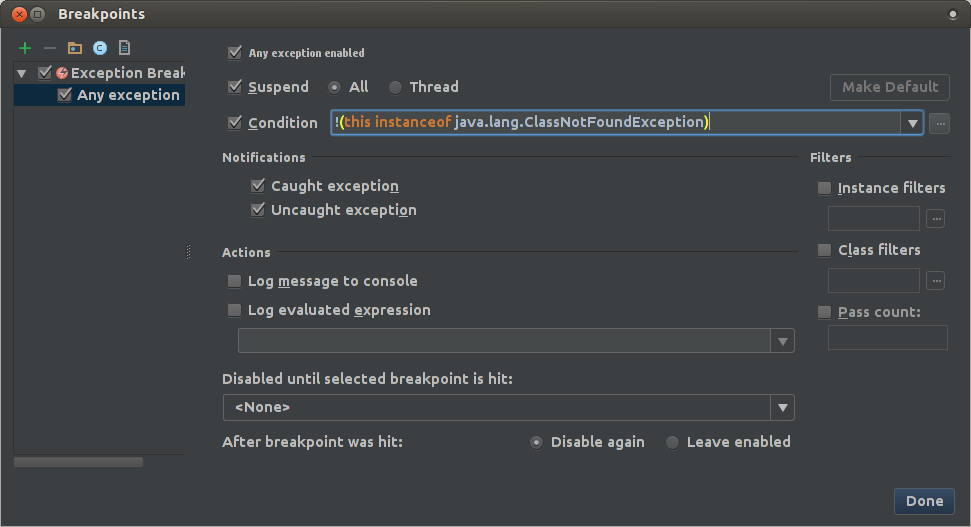

Is there "Break on Exception" in IntelliJ?
Is there feature that will automatically break debugging on first exception occurrence?
So we
- start application
- do something that throw exception
- got IntelliJ popped up highlighted line where exception occurred.
Answer
A fast way to pop up the dialog is to press Ctrl + SHIFT + F8 (On Mac:
Cmd + SHIFT + F8), then click over to the exception breakpoints tab.
If that was the last tab you were viewing, it'll still be selected, making it
easy to flick breaking on exceptions on and off.
This will cause IntelliJ to break at the point in the code (or library code) where the exception was raised. Specifically, you get a 'first chance' at exception handling, before the stack is walked looking for catch/finally blocks to execute.
TIP: Java tends to throw a lot of exceptions internally when loading classes, so this breaking on all exceptions can become quite tedious. The good news is that you can exclude certain types of exception using the condition field.
For example:
!(this instanceof java.lang.ClassNotFoundException)
You can chain multiple such conditions together with &&.

Suggest
A fast way to pop up the dialog is to press Ctrl + SHIFT + F8 (On Mac:
Cmd + SHIFT + F8), then click over to the exception breakpoints tab.
If that was the last tab you were viewing, it'll still be selected, making it
easy to flick breaking on exceptions on and off.
This will cause IntelliJ to break at the point in the code (or library code) where the exception was raised. Specifically, you get a 'first chance' at exception handling, before the stack is walked looking for catch/finally blocks to execute.
TIP: Java tends to throw a lot of exceptions internally when loading classes, so this breaking on all exceptions can become quite tedious. The good news is that you can exclude certain types of exception using the condition field.
For example:
!(this instanceof java.lang.ClassNotFoundException)
You can chain multiple such conditions together with &&.